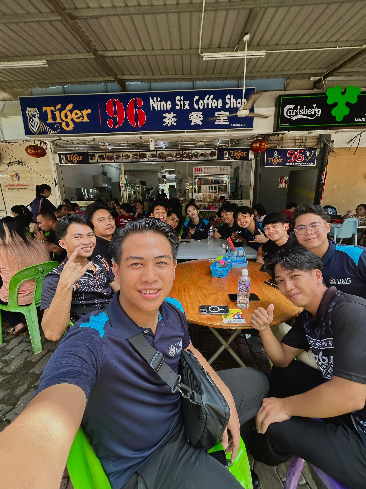

Project Showcase
I served as the Event Director representing PMFKI for the Esports Mobile Legends Tournament during FKI Open Day / Tamu Gadang. I oversaw all aspects of the event, including planning, coordination, and execution.
Gallery
I served as the choir conductor for man voice at Catholic Church Of The Blessed Sacrament, leading the choir during worship services and special events.